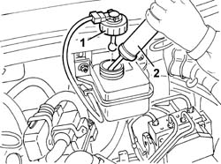
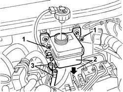
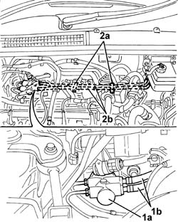

3330C37 pipe from brake fluid reservoir to master cylinder (pump) - r r for rhd versions
- Path
- Procedures > 33 BRAKING SYSTEM > 3330 HYDRAULIC BRAKING SYSTEM > 3330C brake pump, reservoir and load proportioning valve > 3330C37 pipe from brake fluid reservoir to master cylinder (pump) - r r for rhd versions
- Kind
- repair procedure (removal / refitting; the operation number is the code)
- Applies to
- engines: 1.6 TS, 2.0 TS; all production periods
- Interactive page
- https://sloeber94.github.io/elrnDB-a147/en/#/3025232
Applies to: engines: 1.6 TS, 2.0 TS; all production periods
 Removing
Removing
 Refitting
Refitting1016A40 ignition coil cover on cylinder head- r+r
1008C10 power unit upper reaction link r r
4130B10 power steering fluid resevoir r r
1072D22 Air flow switching device control ACTUATOR - R.R. (2.0 engine)
1. Undo the brake fluid reservoir cap.
2. Using a syringe, drain the brake fluid from the reservoir.

Applies to: engines: 1.6 TS, 2.0 TS; all production periods
1. Undo the bolts securing the brake fluid reservoir.
2. Lower the reservoir as far as possible so that the fluid in the pipes flows out, then draw off the brake fluid in the reservoir using a syringe.
3. Disconnect the pipe to be removed from the reservoir and use a cloth to collect any brake fluid emerging.

Applies to: engines: 1.6 TS, 2.0 TS; all production periods
1. Disconnect the pipe (1b) to be removed from the master cylinder and use a cloth to collect any brake fluid emerging.
2. Open bands (2a) and remove pipe (2b) to be removed.

Applies to: engines: 1.6 TS, 2.0 TS; all production periods
Refitting
RemovingCheck that the pipe from brake fluid reservior to master cylinder are undamaged.
Position the pipe and fasten it using the bands.
Fit the pipe to the master cylinder.
Connect the pipe to the reservoir.
Refit the brake fluid reservoir and secure with bolts.
1072D22 Air flow switching device control ACTUATOR - R.R. (2.0 engine)
4130B10 power steering fluid resevoir r r
1008C10 power unit upper reaction link r r